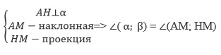
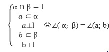
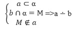
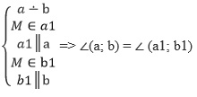

Шпаргалка
Угол в стереометрии
Определение угла между прямой и плоскостью
Угол между прямой и плоскостью равен углу между прямой и её проекцией на плоскость.

Угол между плоскостями
Линейный угол двугранного угла – это угол между двумя лучами, перпендикулярными границе полуплоскостей.

Скрещивающиеся прямые
Скрещивающиеся прямые — прямые, которые не лежат в одной плоскости

Угол между скрещивающимися прямыми
